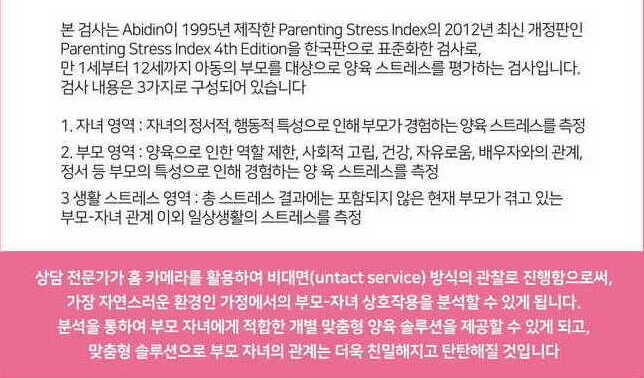
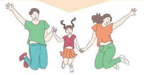
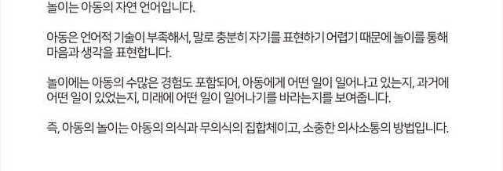
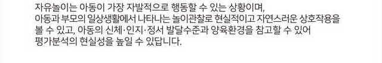
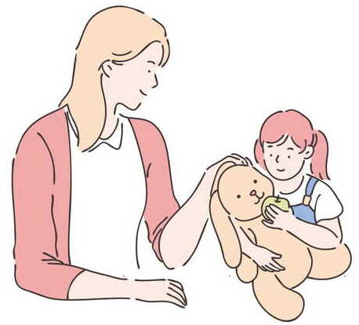
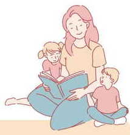

홍길동 엄마의 양육스트레스
검사소개

닥터 아이와 닥터 엄마를 위한 심리적 상호작용 맞춤 솔루션 하나, 둘, 셋은 이렇게 나왔습니다

STRESS(1)
자녀의 스트레스 영역
닥터 아이와 닥터 엄마를 위한 심리적 상호작용 맞춤 솔루션 하나, 둘, 셋은 이렇게 나왔습니다
STRESS(2)
양육자의 스트레스 영역
닥터 아이와 닥터 엄마를 위한 심리적 상호작용 맞춤 솔루션 하나, 둘, 셋은 이렇게 나왔습니다
STRESS(3)
생활 스트레스 영역
닥터 아이와 닥터 엄마를 위한 심리적 상호작용 맞춤 솔루션 하나, 둘, 셋은 이렇게 나왔습니다
아이와 보호자 의 상호작용 관찰 평가, 분석
아동에게 놀이는 정말 중요할까요?

왜 자유놀이 상황을 통해 상호작용관찰을 할까요?
 
아이의 행동 관찰로 본 전반적인 발달상태

1회차
2021년 8월 11일
닥터 아이와 닥터 엄마를 위한 심리적 상호작용 맞춤 솔루션 하나, 둘, 셋은 이렇게 나왔습니다
2회차
2021년 8월 21일
닥터 아이와 닥터 엄마를 위한 심리적 상호작용 맞춤 솔루션 하나, 둘, 셋은 이렇게 나왔습니다
홍길동의 상호작용 관찰 분석
주도성
1. 스스로 놀이감을 선택한다.
닥터 아이와 닥터 엄마를 위한 심리적 상호작용 맞춤 솔루션 하나, 둘, 셋은 이렇게 나왔습니다
2. 스스로 놀이를 전개한다.
닥터 아이와 닥터 엄마를 위한 심리적 상호작용 맞춤 솔루션 하나, 둘, 셋은 이렇게 나왔습니다
아이 분석
홍길동 아이의 강점
닥터 아이와 닥터 엄마를 위한 심리적 상호작용 맞춤 솔루션 하나, 둘, 셋은 이렇게 나왔습니다
홍길동 아이의 약점
닥터 아이와 닥터 엄마를 위한 심리적 상호작용 맞춤 솔루션 하나, 둘, 셋은 이렇게 나왔습니다
BJW-TIP (양육스트레스와 연결해 생각해보세요)
닥터 아이와 닥터 엄마를 위한 심리적 상호작용 맞춤 솔루션 하나, 둘, 셋은 이렇게 나왔습니다
홍길동 엄마의 상호작용 관찰 분석
주도성
1.아동이 놀잇감을 선택하도록 기회를 제공한다.
닥터 아이와 닥터 엄마를 위한 심리적 상호작용 맞춤 솔루션 하나, 둘, 셋은 이렇게 나왔습니다
2. 놀이가 전개되도록 돕는다.
닥터 아이와 닥터 엄마를 위한 심리적 상호작용 맞춤 솔루션 하나, 둘, 셋은 이렇게 나왔습니다
홍길동 엄마의 분석
홍길동 엄마의 강점
닥터 아이와 닥터 엄마를 위한 심리적 상호작용 맞춤 솔루션 하나, 둘, 셋은 이렇게 나왔습니다
홍길동 엄마의 약점
닥터 아이와 닥터 엄마를 위한 심리적 상호작용 맞춤 솔루션 하나, 둘, 셋은 이렇게 나왔습니다
BJW-TIP (양육스트레스와 연결해 생각해보세요)
닥터 아이와 닥터 엄마를 위한 심리적 상호작용 맞춤 솔루션 하나, 둘, 셋은 이렇게 나왔습니다
아이와 엄마를 위한 맞춤 솔루션
닥터 아이와 닥터 엄마를 위한 심리적 상호작용 맞춤 솔루션 하나, 둘, 셋은 이렇게 나왔습니다
닥터 아이와 닥터 엄마를 위한 심리적 상호작용 맞춤 솔루션 하나, 둘, 셋은 이렇게 나왔습니다
닥터 아이와 닥터 엄마를 위한 심리적 상호작용 맞춤 솔루션 하나, 둘, 셋은 이렇게 나왔습니다